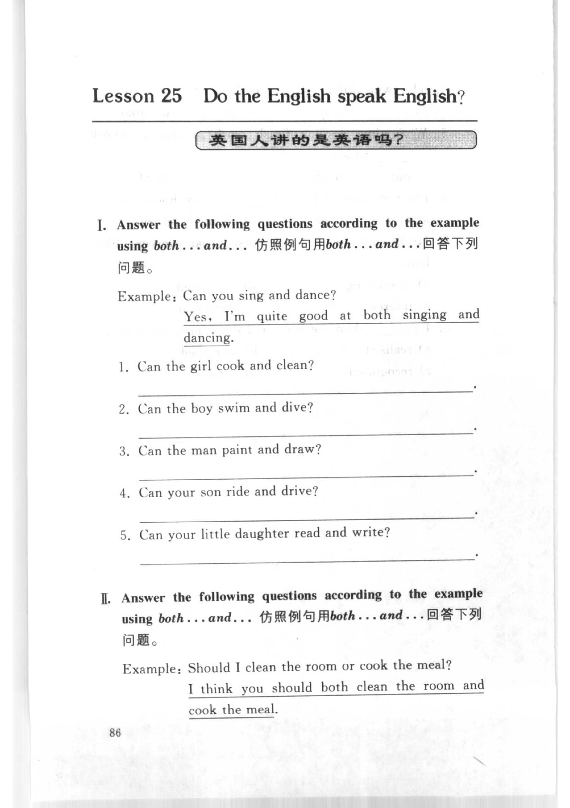
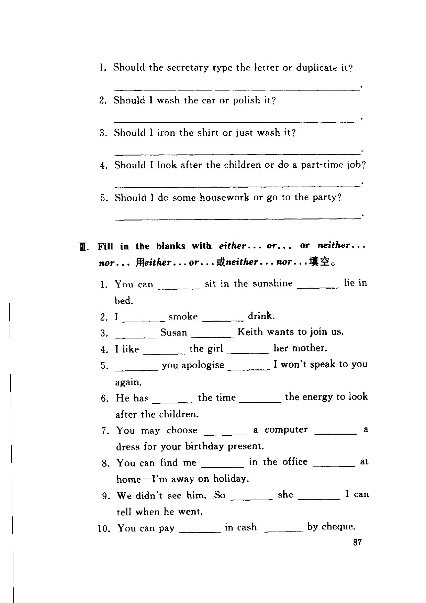
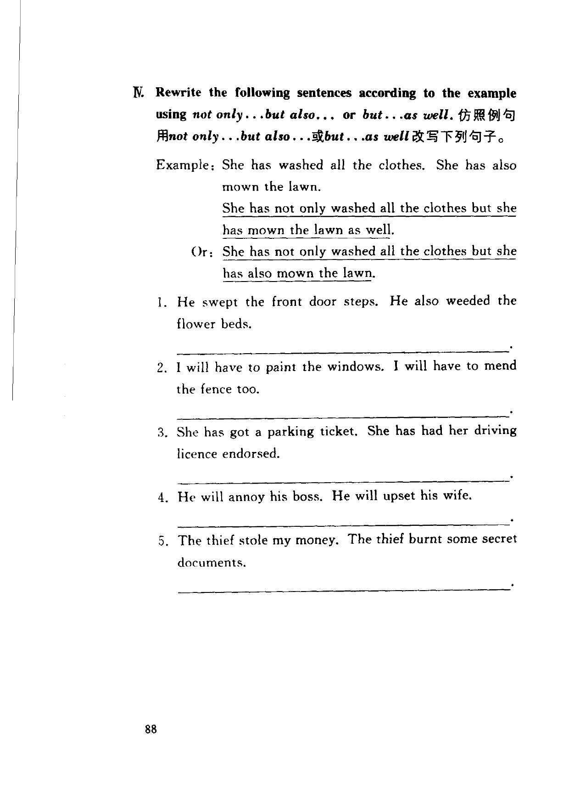
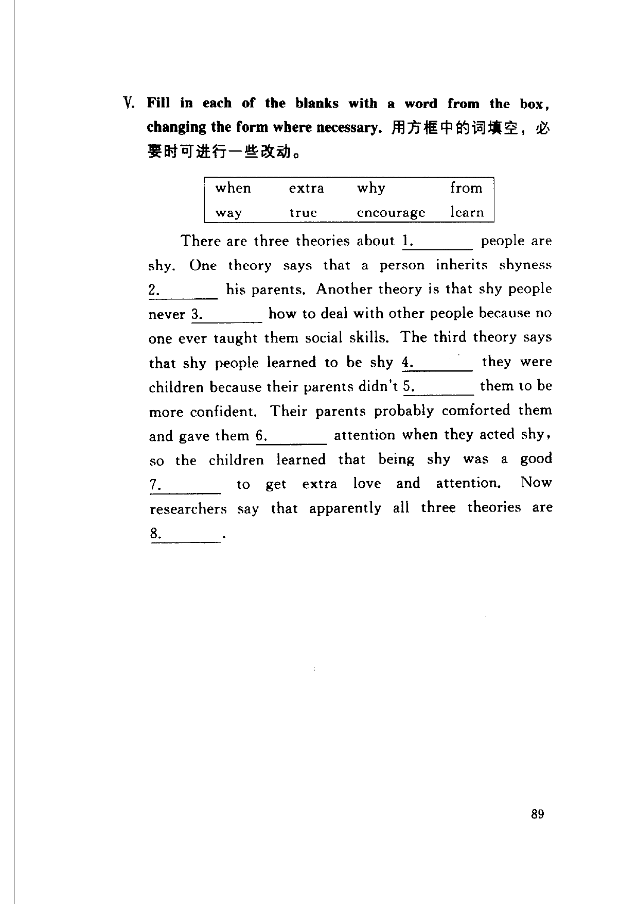

Grammar exercises · 语法练习
I. Answer the following questions according to the example using both...and...
仿照例句用 both...and... 回答下列问题。
Example: Can you sing and dance?
Yes, I'm quite good at both singing and dancing.
-
I. both...and... — Can the girl cook and clean?
-
I. both...and... — Can the boy swim and dive?
-
I. both...and... — Can the man paint and draw?
-
I. both...and... — Can your son ride and drive?
-
I. both...and... — Can your little daughter read and write?
II. Answer the following questions according to the example using both...and...
仿照例句用 both...and... 回答下列问题。
Example: Should I clean the room or cook the meal?
I think you should both clean the room and cook the meal.
-
II. both...and... — Should the secretary type the letter or duplicate it?
-
II. both...and... — Should I wash the car or polish it?
-
II. both...and... — Should I iron the shirt or just wash it?
-
II. both...and... — Should I look after the children or do a part-time job?
-
II. both...and... — Should I do some housework or go to the party?
III. Fill in the blanks with either...or... or neither...nor...
用 either...or... 或 neither...nor... 填空。
-
III. either/neither — You can sit in the sunshine lie in bed.
-
III. either/neither — I smoke drink.
-
III. either/neither — Susan Keith wants to join us.
-
III. either/neither — I like the girl her mother.
-
III. either/neither — you apologise I won't speak to you again.
-
III. either/neither — He has the time the energy to look after the children.
-
III. either/neither — You may choose a computer a dress for your birthday present.
-
III. either/neither — You can find me in the office at home—I'm away on holiday.
-
III. either/neither — We didn't see him. So she I can tell when he went.
-
III. either/neither — You can pay in cash by cheque.
IV. Rewrite the following sentences according to the example using not only...but also... or but...as well.
仿照例句用 not only...but also... 或 but...as well 改写下列句子。
Example: She has washed all the clothes. She has also mown the lawn.
She has not only washed all the clothes but she has mown the lawn as well.
Or: She has not only washed all the clothes but she has also mown the lawn.
-
IV. not only...but also — He swept the front door steps. He also weeded the flower beds.
-
IV. not only...but also — I will have to paint the windows. I will have to mend the fence too.
-
IV. not only...but also — She has got a parking ticket. She has had her driving licence endorsed.
-
IV. not only...but also — He will annoy his boss. He will upset his wife.
-
IV. not only...but also — The thief stole my money. The thief burnt some secret documents.
V. Fill in each of the blanks with a word from the box, changing the form where necessary.
用方框中的词填空，必要时可进行一些改动。
when · extra · why · from · way · true · encourage · learn
There are three theories about 1. people are shy. One theory says that a person inherits shyness 2. his parents. Another theory is that shy people never 3. how to deal with other people because no one ever taught them social skills. The third theory says that shy people learned to be shy 4. they were children because their parents didn't 5. them to be more confident. Their parents probably comforted them and gave them 6. attention when they acted shy, so the children learned that being shy was a good 7. to get extra love and attention. Now researchers say that apparently all three theories are 8..
-
V. Fill in — There are three theories about people are shy.
-
V. Fill in — a person inherits shyness his parents.
-
V. Fill in — shy people never how to deal with other people.
-
V. Fill in — shy people learned to be shy they were children.
-
V. Fill in — their parents didn't them to be more confident.
-
V. Fill in — gave them attention when they acted shy.
-
V. Fill in — being shy was a good to get extra love and attention.
-
V. Fill in — all three theories are .
Original images · 原图对照
Expand a page to compare it with the transcription. Open the original in a new tab to zoom in.
展开原图核对文字，也可以在新标签页打开原图放大查看。
Book page 1 · Exercise I (both...and..., items 1–5) and Exercise II (both...and..., example)
Open original · 打开原图 ↗ Download original · 下载原图


Book page 2 · Exercise II (both...and..., items 1–5) and Exercise III (either...or... / neither...nor..., items 1–10)
Open original · 打开原图 ↗ Download original · 下载原图


Book page 3 · Exercise IV (not only...but also..., items 1–5)
Open original · 打开原图 ↗ Download original · 下载原图


Book page 4 · Exercise V (fill in blanks, passage with 8 blanks)
Open original · 打开原图 ↗ Download original · 下载原图


Your notes and answers
Use this space for longer responses or exercises that do not have an individual answer box.